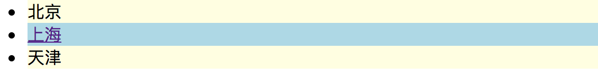
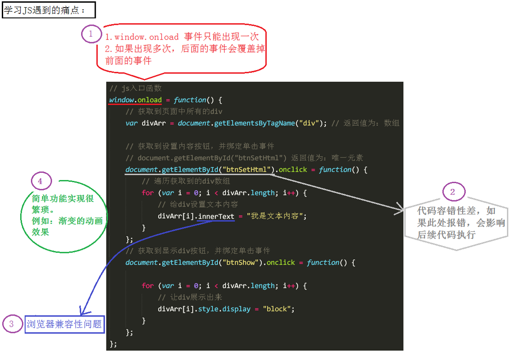
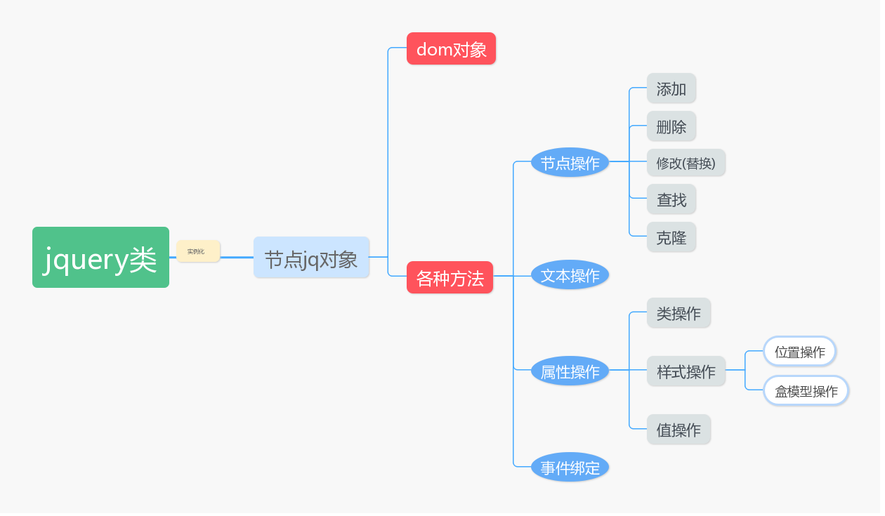
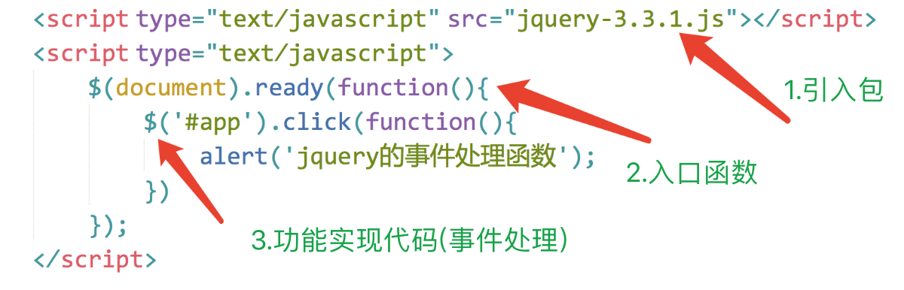
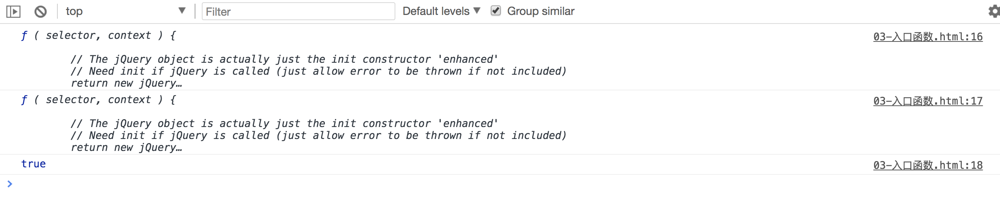

目录
需求一：有html标签关系如下，请找到所有的含有a标签的li标签
<div>
<ul>
<li class="city">北京</li>
<li class="city"><a href="">上海</a></li>
<li class="city">天津</li>
</ul>
</div>原生js实现
<script>
var objs = document.getElementsByClassName('city')
for(var i=0;i< objs.length;i++){
arry_a = objs[i].getElementsByTagName('a')
if(arry_a.length>0){
console.log(objs[i]
)
}
}
</script>jqeury实现
$('li').has('a')需求二：将上面的li标签实现隔行换色效果

原生js实现
var objs = document.getElementsByClassName('city')
for(var i=0;i< objs.length;i++){
if(i%2==0){
objs[i].style.backgroundColor = 'lightblue'
}else{
objs[i].style.backgroundColor = 'lightyellow'
}
}jquery实现
$('li:odd').css('background-color','lightblue')
$('li:even').css('background-color','lightyellow')需求三：点击按钮，显示页面中的三个div，并给div添加文本内容
<!--样式-->
<style type="text/css">
div{
width: 100px;
height: 100px;
background-color: green;
margin-top: 20px;
display: none;
}
</style>
<!--body标签-->
<button>操作</button>
<div></div>
<div></div>
<div></div>原生js实现
<script>
var oBtn = document.getElementsByTagName('button')[0];
var divArr = document.getElementsByTagName('div');
oBtn.onclick = function () {
for (var i = 0; i < divArr.length; i++) {
divArr[i].style.display = "block";
divArr[i].innerHTML = "赵云";
}
}
</script>jquery实现
<script src="jquery3.4.1.js"></script>
<script>
var oBtn = $('button'); //根据标签名获取元素
var oDiv = $('div'); //根据标签名获取元素
oBtn.click(function(){
oDiv.show(2000).html('赵云');//显示盒子，设置内容
})
</script>尽管，你现在啥也不知道，你就知道用上了jquery咱们写代码节省了很多操作，便利了很多就OK了～～～

.show()和.html()可以连写成.show().html()。jQuery 是 js 的一个库，封装了我们开发过程中常用的一些功能，方便我们调用，提高开发效率。
js库是把我们常用的复杂功能封装到简单的方法中，我们用的时候，将库直接引入然后调用方法即可。

初期，主要学习如何使用jQuery操作DOM，其实就是学习jQuery封装好的那些功能API。
这些API的共同特点是：几乎全都是方法。所以，在使用jQuery的API时，都是方法调用，也就是说要加小括号()，小括号里面是相应的参数，参数不同，功能不同。
下载 ：jQuery有两个文件，一个是jquery-3.4.1.js(未压缩版)，一个是jquery-3.4.1.min.js(压缩版,推荐项目上线时使用)
关于jQuery的相关资料：

注意：导包的代码一定要放在js代码的最上面。
$ 符号原生 js 的入口函数指的是：window.onload = function() {}
//原生 js 的入口函数。页面上所有内容加载完毕，才执行。
//不仅要等文本加载完毕，而且要等图片也要加载完毕，才执行函数。
window.onload = function () {
alert(1);
}jQuery的入口函数，有以下几种写法：
写法一：文档加载完毕，图片不加载的时候，就可以执行这个函数。
$(document).ready(function () {
alert(1);
})写法二：文档加载完毕，图片不加载的时候，就可以执行这个函数。（写法一的简洁版）
$(function () {
alert(1);
});写法三：文档加载完毕，图片也加载完毕的时候，在执行这个函数。
$(window).ready(function () {
alert(1);
})jQuery入口函数与js入口函数的区别：
区别一：书写个数不同：
区别二：执行时机不同：
文档加载的顺序：从上往下，边解析边执行。
$ 符号jQuery 使用 $ 符号原因：书写简洁、相对于其他字符与众不同、容易被记住。
jQuery占用了我们两个变量：$ 和 jQuery。当我们在代码中打印它们俩的时候：
<script src="jquery-3.3.1.js"></script>
<script>
console.log($);
console.log(jQuery);
console.log($===jQuery);
</script>
从打印结果可以看出，$ 代表的就是 jQuery。
通过 jQuery 获取的元素是一个jq对象数组，其中包含着原生JS中的DOM对象
针对下面这样一个div结构：
<div></div>
<div id="app"></div>
<div class="box"></div>
<div class="box"></div>
<div></div>通过原生 js 获取这些元素节点的方式是：
var myBox = document.getElementById("app"); //通过 id 获取单个元素
var boxArr = document.getElementsByClassName("box"); //通过 class 获取的是伪数组
var divArr = document.getElementsByTagName("div"); //通过标签获取的是伪数组通过 jQuery 获取这些元素节点的方式是：（获取的都是数组）
//获取的是数组，里面包含着原生 JS 中的DOM对象。
console.log($('#app'));
console.log($('.box'));
console.log($('div'));总结：jQuery 就是把 DOM 对象重新包装了一下，让其具有了 jQuery 方法
DOM 对象 转为 jQuery对象：
$(js对象);jQuery对象 转为 DOM 对象：
jquery对象[index]; //方式1（推荐）
jquery对象.get(index); //方式2jQuery对象转换成了 DOM 对象之后，可以直接调用 DOM 提供的一些功能。如：
$('div')[1].style.backgroundColor = 'yellow';
$('div')[3].style.backgroundColor = 'green';$("#id") //id选择器
$("tagName") //标签选择器
$(".className") //class选择器
$("*") //通用选择器
$("div.c1") // 交集选择器 找到有含有c1类的div标签
$("#id, .className, tagName") //并集选择器jquery选择器示例代码
<!DOCTYPE html>
<html lang="en">
<head>
<meta charset="UTF-8">
<title></title>
<style>
div{
float: left;
}
</style>
</head>
<body>
<div></div>
<div id="box"></div>
<div class="box"></div>
<div class="box"></div>
<div></div>
<script type="text/javascript" src="jquery3.4.1.js"></script>
<script type="text/javascript">
//入口函数
$(function(){
//三种方式获取jquery对象
var jqBox1 = $("#box");
var jqBox2 = $(".box");
var jqBox3 = $('div');
//操作标签选择器
jqBox3.css('width', '100');
jqBox3.css('height', 100);
jqBox3.css('background-color', 'red');
jqBox3.css('margin-top', 10);
//操作类选择器(隐式迭代，不用一个一个设置)
jqBox2.css("background", "green");
jqBox2.text('哈哈哈')
//操作id选择器
jqBox1.css("background", "yellow");
})
</script>
</body>
</html>$("x y");// x的所有后代y（子子孙孙）
$("x > y");// x的所有儿子y（儿子）
$("x + y")// 找到所有紧挨在x后面的y
$("x ~ y")// x之后所有的兄弟y<!DOCTYPE html>
<html>
<head lang="en">
<meta charset="UTF-8">
<title></title>
<script src="jquery-3.3.1.js"></script>
<script>
$(function () {
//获取ul中的li设置为粉色
//后代：儿孙重孙曾孙玄孙....
var jqLi = $("ul li");
jqLi.css("margin", 5);
jqLi.css("background", "pink");
//子代：亲儿子
var jqOtherLi = $("ul>li");
jqOtherLi.css("background", "red");
});
</script>
</head>
<body>
<ul>
<li>111</li>
<li>222</li>
<li>333</li>
<ol>
<li>aaa</li>
<li>bbb</li>
<li>ccc</li>
</ol>
</ul>
</body>
</html>$('[href]') //找所有含href属性的标签
$('a[href]') //找所有含href属性的a标签
$('a[title="luffy"]') //找所有title属性是luffy的a标签
$('a[title="baidu"]') //找所有title属性不是百度的a标签
$('a[href^="https"]') //找所有href属性以https开头的a标签
$('a[href$="html"]') //找所有href属性以html结尾的a标签
$('a[href*="i"]') //找所有href属性中含有i的a标签
$('a[href][title="luffy"]') //找所有含有href属性且title属性=luffy的a标签 <!DOCTYPE html>
<html>
<head>
<meta charset="UTF-8">
<title></title>
</head>
<body>
<div id="box">
<h2 class="title">属性元素器</h2>
<!--<p class="p1">我是一个段落</p>-->
<ul>
<li id="li1">分手应该体面</li>
<li class="what" id="li2">分手应该体面</li>
<li class="what">分手应该体面</li>
<li class="heihei">分手应该体面</li>
</ul>
<form action="" method="post">
<input name="username" type='text' value="1" checked="checked" />
<input name="username1111" type='text' value="1" />
<input name="username2222" type='text' value="1" />
<input name="username3333" type='text' value="1" />
<button class="btn-default">按钮1</button>
<button class="btn-info">按钮1</button>
<button class="btn-success">按钮1</button>
<button class="btn-danger">按钮1</button>
</form>
</div>
</body>
<script src="jquery-3.2.1.js"></script>
<script type="text/javascript">
$(function(){
//标签名[属性名] 查找所有含有id属性的该标签名的元素
$('li[id]').css('color','red');
//匹配给定的属性是what值得元素
$('li[class=what]').css('font-size','30px');
//[attr!=value] 匹配所有不含有指定的属性，或者属性不等于特定值的元素
$('li[class!=what]').css('font-size','50px');
//匹配给定的属性是以某些值开始的元素
$('input[name^=username]').css('background','gray');
//匹配给定的属性是以某些值结尾的元素
$('input[name$=222]').css('background','greenyellow');
//匹配给定的属性是以包含某些值的元素
$('button[class*=btn]').css('background','red');
})
</script>
</html> :first // 第一个
:last // 最后一个
:eq(index)// 索引等于index的那个元素
:even // 匹配所有索引值为偶数的元素，从 0 开始计数
:odd // 匹配所有索引值为奇数的元素，从 0 开始计数
:gt(index)// 匹配所有大于给定索引值的元素
:lt(index)// 匹配所有小于给定索引值的元素
:not(元素选择器)// 移除所有满足not条件的标签
:has(元素选择器)// 根据含有某个后代筛选<!DOCTYPE html>
<html>
<head>
<meta charset="UTF-8">
<title>基本过滤选择器</title>
</head>
<body>
<ul>
<li>哈哈哈哈，基本过滤选择器</li>
<li>嘿嘿嘿</li>
<li>天王盖地虎</li>
<li>小鸡炖蘑菇</li>
</ul>
</body>
<script src="jquery-3.3.1.js"></script>
<script type="text/javascript">
$(function(){
//获取第一个 :first ,获取最后一个 :last
//奇数
$('li:odd').css('color','red');
//偶数
$('li:even').css('color','green');
//选中索引值为1的元素 *
$('li:eq(1)').css('font-size','30px');
//大于索引值1
$('li:gt(1)').css('font-size','50px');
//小于索引值1
$('li:lt(1)').css('font-size','12px');
})
</script>
</html>type筛选器:text
:password
:file
:radio
:checkbox
:submit
:reset
:button其他属性筛选器
:enabled
:disabled
:checked
:selected//找兄弟
$("#id").siblings();// 兄弟们，不包含自己，.siblings('#id')，可以在添加选择器进行进一步筛选
//找弟弟
$("#id").next()
$("#id").nextAll()
$("#id").nextUntil("#i2") //直到找到id为i2的标签就结束查找，不包含它
//找哥哥
$("#id").prev()
$("#id").prevAll()
$("#id").prevUntil("#i2")//找祖辈
$("#id").parent()
$("#id").parents() // 查找当前元素的所有的父辈元素（爷爷辈、祖先辈都找到）
$("#id").parentsUntil('body') // 查找当前元素的所有的父辈元素，直到遇到匹配的那个元素为止，这里直到body标签，不包含body标签，基本选择器都可以放到这里面使用。
//找儿子
$("#id").children();// 儿子们//过滤$("div").first() // 获取匹配的第一个元素
$("div").last() // 获取匹配的最后一个元素
$("div").eq(n) // 索引值等于指定值的元素，n是索引
$("div").not() // 从匹配元素的集合中删除与指定表达式匹配的元素
$("div").find("p") //后代选择器，在所有div标签中找后代的p标签
$("div").filter(".c1") // 交集选择器，从结果集中过滤出有c1样式类的
$("div").has() // 保留包含特定后代的元素，去掉那些不含有指定后代的元素。<!DOCTYPE html>
<html>
<head>
<meta charset="UTF-8">
<title></title>
</head>
<body>
<div id="box">
<p class="p1">
<span>我是第一个span标签</span>
<span>我是第二个span标签</span>
<span>我是第三个span标签</span>
</p>
<button>按钮</button>
</div>
<ul>
<li class="list">2</li>
<li>3</li>
<li>4</li>
<li>5</li>
</ul>
</body>
<script src="jquery-3.2.1.js"></script>
<script type="text/javascript">
//获取第n个元素 数值从0开始
$('span').eq(1).css('color','#FF0000');
//获取第一个元素 :first :last 点语法 ：get方法 和set方法
$('span').last().css('color','greenyellow');
$('span').first().css('color','greenyellow');
//查找span标签的父元素（亲的）
$('span').parent('.p1').css({"width":'200px','height':'200px',"background":'red'});
//选择所有的兄弟元素（不包括自己）
$('.list').siblings('li').css('color','red');
//查找所有的后代元素
$('div').find('button').css('background','yellow');
//不写参数代表获取所有子元素。
$('ul').children().css("background", "green");
$('ul').children("li").css("margin-top", 10);
</script>
</html>html 标签元素中所有的内容
//获取值：获取选中标签元素中所有的内容
$('#box').html();
//设置值：设置该元素的所有内容 会替换掉 标签中原来的内容
$('#box').html('<a href="https://www.baidu.com">百度一下</a>'); text 标签元素的文本内容
//获取值：获取选中标签元素中的文本内容
$('#box').text();
//设置值：设置该所有的文本内容
$('#box').text('<a href="https://www.baidu.com">百度一下</a>');text()方法接收的值为标签的时候 不会被渲染为标签元素 只会被当做值渲染到浏览器中
之前js中咱们学习了js的DOM操作,也就是所谓的增删改查DOM操作。通过js的DOM的操作，大家也能发现，大量的繁琐代码实现我们想要的效果。那么jQuery的文档操作的API提供了便利的方法供我们操作我们的文档。
看一个之前我们js操作DOM的例子：
var oUl = document.getElementsByTagName('ul')[0];
var oLi = document.createElement('li');
oLi.innerHTML = '赵云';
oUl.appendChild(oLi);append和appendTo
//追加某元素，在父元素中添加新的子元素。子元素可以为：stirng | element（js对象） | jquery元素
父元素.append(子元素)
//追加到某元素，子元素添加到父元素
子元素.appendTo(父元素)//append
var oli = document.createElement('li');
oli.innerHTML = '哈哈哈';
$('ul').append('<li>1233</li>');
$('ul').append(oli);
$('ul').append($('#app'));
//appendTo
$('<li>天王盖地虎</li>').appendTo($('ul')).addClass('active')如果追加的jquery对象原本在文档树中，那么这些元素将从原位置上消失。简言之，就是移动操作。
prepend和prependTo
// 前置添加， 添加到父元素的第一个位置
父元素.prepend(子元素)；
// 前置添加， 添加到父元素的第一个位置
子元素.prependTo(父元素)；
// prepand
$('ul').prepend('<li>我是第一个</li>')
// prependTo
$('<a href="#">路飞学诚</a>').prependTo('ul')after和insertAfter
// 在匹配的元素之后插入内容
兄弟元素.after(要插入的兄弟元素)；
要插入的兄弟元素.inserAfter(兄弟元素)；
$('ul').after('<h4>我是一个h3标题</h4>')
$('<h5>我是一个h2标题</h5>').insertAfter('ul')before和insertBefore
// 在匹配的元素之前插入内容
兄弟元素.before(要插入的兄弟元素)；
要插入的兄弟元素.inserBefore(兄弟元素)；
//示例
$('ul').before('<h3>我是一个h3标题</h3>')
$('<h2>我是一个h2标题</h2>').insertBefore('ul')//删除节点后，事件也会删除（简言之，删除了整个标签）
$(selector).remove();
// 删除节点后，事件会保留
$(selector).detach();
// 清空选中元素中的所有后代节点
$(selector).empty(); // remove
$('ul').remove();
// detach
var $btn = $('button').detach()
$('ul').append($btn) //此时按钮能追加到ul中
//empty
$('ul').empty() //清空掉ul中的子元素，保留ul// selector被替换：将所有匹配的元素替换成指定的string、js对象、jquery对象。
$(selector).replaceWith(content);
// selector被替换：将所有的匹配的元素替换成p标签。
$('<p>哈哈哈</p>')replaceAll(selector);
// replaceWith
$('h5').replaceWith('<a href="#">hello world</a>') //将所有的h5标题替换为a标签
$('h5').replaceWith($('#app')); //将所有h5标题标签替换成id为app的dom元素
// replaceAll
$('<br/><hr/><button>按钮</button>').replaceAll('h4')// 克隆匹配的DOM元素
$(选择器).clone();
$('button').click(function() {
// 1.clone()：克隆匹配的DOM元素
// 2.clone(true)：元素以及其所有的事件处理并且选中这些克隆的副本(简言之，副本具有与真身一样的事件处理能力)
$(this).clone(true).insertAfter(this);
})//获取值：attr()设置一个属性值的时候 只是获取值
$('div').attr('id')
$('div').attr('class')
//设置值
$('div').attr('class','box') //设置一个值
$('div').attr({name:'hahaha',class:'happy'}) //设置多个值//删除单个属性
$('#box').removeAttr('name');
$('#box').removeAttr('class');
//删除多个属性
$('#box').removeAttr('name class');// 查看属性
$(selector).prop(property)
// 设置属性
$(selector).prop(property,value)
// 设置多个属性
$(selector).prop({property:value, property:value,...})$('input').attr('checked')
"checked"
$('input').prop('checked') // true
$('input').prop('cheched',false) //设置取消选中表格全选、反选示例
<!DOCTYPE html>
<html lang="en">
<head>
<meta charset="UTF-8">
<title>Title</title>
</head>
<body>
<button id="all">全选</button>
<button id="reverse">反选</button>
<button id="cancel">取消</button>
<table border="1">
<thead>
<tr>
<th>#</th>
<th>姓名</th>
<th>爱好</th>
</tr>
</thead>
<tbody>
<tr>
<td><input type="checkbox"></td>
<td>金老板</td>
<td>开车</td>
</tr>
<tr>
<td><input type="checkbox"></td>
<td>alex</td>
<td>抽烟、喝酒、烫头</td>
</tr>
<tr>
<td><input type="checkbox"></td>
<td>苑昊（苑局）</td>
<td>不洗头、不翻车、不要脸</td>
</tr>
</tbody>
</table>
<script src="jquery3.4.1.js"></script>
<script>
// 点击全选按钮 选中所有的checkbox
// DOM绑定事件方法
// $("#all")[0].onclick = function(){}
// jQuery绑定事件方法
$("#all").click(function () {
$(":checkbox").prop('checked', true);
});
// 取消
$("#cancel").on("click", function () {
$(":checkbox").prop('checked', false);
});
// 反选
$("#reverse").click(function () {
// 1. 找到所有选中的checkbox取消选中
// $("input:checked").prop('checked', false);
// // 2. 找到没有选中的checkbox选中
// $("input:not(:checked)").prop('checked', true);
//你会发现上面这么写，不行，为什么呢？因为你做了第一步操作之后，再做第二步操作的时候，所有标签就已经全部取消选中了，所以第二步就把所有标签选中了
// 方法1. for循环所有的checkbox,挨个判断原来选中就取消选中，原来没选中就选中
var $checkbox = $(":checkbox");
for (var i=0;i<$checkbox.length;i++){
// 获取原来的选中与否的状态
var status = $($checkbox[i]).prop('checked');
$($checkbox[i]).prop('checked', !status);
}
// 方法2. 先用变量把标签原来的状态保存下来
// var $unchecked = $("input:not(:checked)");
// var $checked = $("input:checked");
//
// $unchecked.prop('checked', true);
// $checked.prop('checked', false);
})
</script>
</body>
</html>// 为每个匹配的元素添加指定的类名。
$('div').addClass("box");//追加一个
$('div').addClass("box box2");//追加多个// 从所有匹配的元素中删除全部或者指定的类。
$('div').removeClass('box')；//移除box类
$('div').removeClass();//移除全部的类var tag = false;
$('span').click(function(){
if(tag){
$('span').removeClass('active')
tag=false;
}else{
$('span').addClass('active')
tag=true;
}
})通过添加删除类，来实现元素的显示隐藏
<!DOCTYPE html>
<html lang="en">
<head>
<meta charset="UTF-8">
<title></title>
<style type="text/css">
.active{
color: red;
}
</style>
</head>
<body>
<ul>
<li class="item">张三</li>
<li class="item">李四</li>
<li class="item">王五</li>
</ul>
<script type="text/javascript" src="jquery-3.3.1.js"></script>
<script type="text/javascript">
$(function(){
$('ul li').click(function(){
// this指的是当前点击的DOM对象 ,使用$(this)转化jquery对象
$(this).addClass('active').siblings('li').removeClass('active');
})
})
</script>
</body>
</html>// 如果存在（不存在）就删除（添加）一个类。
$('div').toggleClass('box')
$('span').click(function(){
//动态的切换class类名为active
$(this).toggleClass('active')
})// 获取值：用于表单控件中获取值，比如input textarea select等等
$(selector).val()
// 设置值：
$('input').val('设置了表单控件中的值')；取值:
文本输入框:$('#username').val();
input,type=radio单选框: $('[type="radio"]:checked').val();,首先找到被选中的标签,再进行取值
input,type=checkbox多选框: 通过val方法不能直接获取多选的值,只能拿到一个,想拿到多个项的值,需要循环取值
var d = $('[type="checkbox"]:checked');
for (var i=0;i<d.length;i++){
console.log(d.eq(i).val());
}
单选下拉框select: -- $('#s1').val();
多选下拉框select: -- $('#s2').val(); -- ['1','2']
设置值
文本输入框: -- $('#username').val('xxx');
input,type=radio单选框: -- $(':radio').val(['1']) 找到所有的radio,然后通过val设置值,达到一个选中的效果.
给单选或者多选框设置值的时候,只要val方法中的值和标签的value属性对应的值相同时,那么这个标签就会被选中.
此处有坑:$(':radio').val('1');这样设置值,不带中括号的,意思是将所有的input,type=radio的标签的value属性的值设置为1.
input,type=checkbox多选框: -- $(':checkbox').val(['1','2']);
单选下拉框select: -- $('#s1').val(['3']);
多选下拉框select: -- $('#s2').val(['1','2']);
统一一个方法:
选择框都用中括号设置值.// css(直接修改css的属性来修改样式)
$("div").css('color'); //获取
$("p").css("color", "red"); //设置
$("p").css({"color":"red","background-color":"yello"}); // 设置多个// 宽度
.width() //获取宽度 返回匹配元素中第一个元素的宽，一个没有单位的数值
.width( value ) //设置宽度
//高度
.height() //获取高度 返回匹配元素中第一个元素的高，一个没有单位的数值
.height( value ) //设置高度// 内部宽
.innerWidth() // 获取
.innerWidth(value);//设置
// 内部高
.innerHeight() // 获取
.innerHeight(value); //设置// 外部宽
.outerWidth() //获取第一个匹配元素 ：内容+padding+border的宽
.outerWidth(true) //获取第一个匹配元素：内容+padding+border+margin的宽
.outerWidth(value) //设置多个，调整的是“内容”的宽
//外部高
.outerHeight() //第一个匹配元素：获取内容+padding+border的高
.outerHeight(true) //第一个匹配元素：获取内容+padding+border+margin的高
.outerHeight( value ) //设置多个，调整的是“内容”的高// 水平方向
.scrollLeft() //获取
.scrollLeft( value )//设置
// 垂直方向
.scrollTop() //获取
.scrollTop( value ) //设置jQuery提供的一组网页中常见的动画效果，这些动画是标准的、有规律的效果；同时还提供给我们了自定义动画的功能。
方式一：无参数，表示让指定的元素直接显示出来。其实这个方法的底层就是通过display: block;实现的。
$("div").show();方式二：通过控制元素的宽高、透明度、display属性，逐渐显示，例如：3秒后显示完毕。
$('div').show(3000);方式三：和方式二类似，也是通过控制元素的宽高、透明度、display属性，逐渐显示。
$("div").show("slow");// slow 慢：600ms
// normal 正常：400ms
// fast 快：200ms方式四：动画执行完后，立即执行回调函数。
//show(毫秒值，回调函数;
$("div").show(5000,function () {
alert("动画执行完毕！");
});总结：上面的四种方式几乎一致：参数可以有两个，第一个是动画的执行时长，第二个是动画结束后执行的回调函数。
方式参照上面的show()方法的方式。如下：
$(selector).hide();
$(selector).hide(1000);
$(selector).hide("slow");
$(selector).hide(1000, function(){});<!DOCTYPE html>
<html>
<head>
<meta charset="UTF-8">
<title></title>
<style type="text/css">
#box{
width: 200px;
height: 200px;
background-color: green;
border: 1px solid red;
display: none;
}
</style>
</head>
<body>
<div id="box">
</div>
<button id="btn">隐藏</button>
</body>
<script src="jquery-3.3.1.js"></script>
<script type="text/javascript">
//jquery 提供了一些方法 show() hide() 控制元素显示隐藏
var isShow = true;
$('#btn').click(function(){
if(isShow){
$('#box').show('slow',function(){
$(this).text('盒子出来了');
$('#btn').text('显示');
isShow = false;
})
}else{
$('#box').hide(2000,function(){
$(this).text('');
$('#btn').text('隐藏');
isShow = true;
})
}
})
</script>
</html>$('#box').toggle(3000,function(){});显示和隐藏的来回切换采用的是toggle()方法：就是先执行show()，再执行hide()
$('#btn').click(function(){
$('#box').toggle(3000,function(){
$(this).text('盒子出来了');
if ($('#btn').text()=='隐藏') {
$('#btn').text('显示');
}else{
$('#btn').text('隐藏');
}
});
})$(selector).slideDown(speed, 回调函数);注意：省略参数或者传入不合法的字符串，那么则使用默认值：400毫秒（同样适用于fadeIn/slideDown/slideUp）
$(selector).slideUp(speed, 回调函数);$(selector).slideToggle(speed, 回调函数);<!DOCTYPE html>
<html>
<head lang="en">
<meta charset="UTF-8">
<title></title>
<style>
div {
width: 300px;
height: 300px;
display: none;
background-color: green;
}
</style>
<script src="jquery-3.3.1.js"></script>
<script>
$(function () {
//点击按钮后产生动画
$("button:eq(0)").click(function () {
//滑入动画： slideDown(毫秒值，回调函数[显示完毕执行什么]);
$("div").slideDown(2000, function () {
alert("动画执行完毕！");
});
})
//滑出动画
$("button:eq(1)").click(function () {
//滑出动画：slideUp(毫秒值，回调函数[显示完毕后执行什么]);
$("div").slideUp(2000, function () {
alert("动画执行完毕！");
});
})
$("button:eq(2)").click(function () {
//滑入滑出切换（同样有四种用法）
$("div").slideToggle(1000);
})
})
</script>
</head>
<body>
<button>滑入</button>
<button>滑出</button>
<button>切换</button>
<div></div>
</body>
</html>淡入动画效果：让元素以淡淡的进入视线的方式展示出来
$(selector).fadeIn(speed, callback);淡出动画效果：让元素以渐渐消失的方式隐藏起来
$(selector).fadeOut(1000);淡入淡出切换动画效果：通过改变透明度，切换匹配元素的显示或隐藏状态
$(selector).fadeToggle('fast', callback);参数的含义同show()方法。
代码如下：
<!DOCTYPE html>
<html>
<head lang="en">
<meta charset="UTF-8">
<title></title>
<style>
div {
width: 300px;
height: 300px;
display: none;
/*透明度*/
opacity: 0.5;
background-color: red;
}
</style>
<script src="jquery-3.3.1.js"></script>
<script>
$(function () {
//点击按钮后产生动画
$("button:eq(0)").click(function () {
// //淡入动画用法1: fadeIn(); 不加参数
$("div").fadeIn();
// //淡入动画用法2: fadeIn(2000); 毫秒值
// $("div").fadeIn(2000);
// //通过控制 透明度和display
//淡入动画用法3: fadeIn(字符串); slow慢：600ms normal正常:400ms fast快：200ms
// $("div").fadeIn("slow");
// $("div").fadeIn("fast");
// $("div").fadeIn("normal");
//淡入动画用法4: fadeIn(毫秒值，回调函数[显示完毕执行什么]);
// $("div").fadeIn(5000,function () {
// alert("动画执行完毕！");
// });
})
//滑出动画
$("button:eq(1)").click(function () {
// //滑出动画用法1: fadeOut(); 不加参数
$("div").fadeOut();
// //滑出动画用法2: fadeOut(2000); 毫秒值
// $("div").fadeOut(2000); //通过这个方法实现的：display: none;
// //通过控制 透明度和display
//滑出动画用法3: fadeOut(字符串); slow慢：600ms normal正常:400ms fast快：200ms
// $("div").fadeOut("slow");
// $("div").fadeOut("fast");
// $("div").fadeOut("normal");
//滑出动画用法1: fadeOut(毫秒值，回调函数[显示完毕执行什么]);
// $("div").fadeOut(2000,function () {
// alert("动画执行完毕！");
// });
})
$("button:eq(2)").click(function () {
//滑入滑出切换
//同样有四种用法
$("div").fadeToggle(1000);
})
$("button:eq(3)").click(function () {
//改透明度
//同样有四种用法
$("div").fadeTo(1000, 0.5, function () {
alert(1);
});
})
})
</script>
</head>
<body>
<button>淡入</button>
<button>淡出</button>
<button>切换</button>
<button>改透明度为0.5</button>
<div></div>
</body>
</html>$(selector).animate({params}, speed, callback);<!DOCTYPE html>
<html>
<head lang="en">
<meta charset="UTF-8">
<title></title>
<style>
div {
position: absolute;
left: 20px;
top: 30px;
width: 100px;
height: 100px;
background-color: green;
}
</style>
<script src="jquery-3.3.1.js"></script>
<script>
jQuery(function () {
$("button").click(function () {
var json = {"width": 500, "height": 500, "left": 300, "top": 300, "border-radius": 100};
var json2 = {
"width": 100,
"height": 100,
"left": 100,
"top": 100,
"border-radius": 100,
"background-color": "red"
};
//自定义动画
$("div").animate(json, 1000, function () {
$("div").animate(json2, 1000, function () {
alert("动画执行完毕！");
});
});
})
})
</script>
</head>
<body>
<button>自定义动画</button>
<div></div>
</body>
</html>$(selector).stop(true, false);//第一个参数：
true：后续动画不执行。
false：后续动画会执行。
//第二个参数：
true：立即执行完成当前动画。
false：立即停止当前动画。参数如果都不写，默认两个都是false。实际工作中，直接写stop()用的多。
鼠标悬停，弹出下拉菜单
<!DOCTYPE html>
<html>
<head lang="en">
<meta charset="UTF-8">
<title></title>
<style type="text/css">
* {
margin: 0;
padding: 0;
}
ul {
list-style: none;
}
.wrap {
width: 330px;
height: 30px;
margin: 100px auto 0;
padding-left: 10px;
background-color: pink;
}
.wrap li {
background-color: green;
}
.wrap > ul > li {
float: left;
margin-right: 10px;
position: relative;
}
.wrap a {
display: block;
height: 30px;
width: 100px;
text-decoration: none;
color: #000;
line-height: 30px;
text-align: center;
}
.wrap li ul {
position: absolute;
top: 30px;
display: none;
}
</style>
<script src="jquery-3.3.1.js"></script>
<script>
//入口函数
$(document).ready(function () {
//需求：鼠标放入一级li中，让他里面的ul显示。移开隐藏。
var jqli = $(".wrap>ul>li");
//绑定事件
jqli.mouseenter(function () {
$(this).children("ul").stop().slideDown(1000);
});
//绑定事件(移开隐藏)
jqli.mouseleave(function () {
$(this).children("ul").stop().slideUp(1000);
});
});
</script>
</head>
<body>
<div class="wrap">
<ul>
<li>
<a href="javascript:void(0);">一级菜单1</a>
<ul>
<li><a href="javascript:void(0);">二级菜单2</a></li>
<li><a href="javascript:void(0);">二级菜单3</a></li>
<li><a href="javascript:void(0);">二级菜单4</a></li>
</ul>
</li>
<li>
<a href="javascript:void(0);">二级菜单1</a>
<ul>
<li><a href="javascript:void(0);">二级菜单2</a></li>
<li><a href="javascript:void(0);">二级菜单3</a></li>
<li><a href="javascript:void(0);">二级菜单4</a></li>
</ul>
</li>
<li>
<a href="javascript:void(0);">三级菜单1</a>
<ul>
<li><a href="javascript:void(0);">三级菜单2</a></li>
<li><a href="javascript:void(0);">三级菜单3</a></li>
<li><a href="javascript:void(0);">三级菜单4</a></li>
</ul>
</li>
</ul>
</div>
</body>
</html>上方代码中，关键的地方在于，用了stop函数，再执行动画前，先停掉之前的动画。
bind(type,data,fn)描述：为每一个匹配元素的特定事件（像click）绑定一个事件处理器函数。
type (String) : 事件类型
data (Object) : (可选) 作为event.data属性值传递给事件对象的额外数据对象
fn ( Function) : 绑定到每个匹配元素的事件上面的处理函数当每个p标签被点击的时候，弹出其文本
$("p").bind("click", function(){
alert( $(this).text() );
});你可以在事件处理之前传递一些附加的数据
function handler(event) {
//event.data 可以获取bind()方法的第二个参数的数据
alert(event.data.foo);
}
$("p").bind("click", {foo: "bar"}, handler)常见事件
click(function(){...})
hover(function(){...})
blur(function(){...})
focus(function(){...})
change(function(){...}) //内容发生变化，input，select等
keyup(function(){...})
mouseover/mouseout
mouseenter/mouseleave
mouseover事件是如果该标签有子标签，那么移动到该标签或者移动到子标签时会连续触发，mouseenter事件不管有没有子标签都只触发一次，表示鼠标进入这个对象通过返回false来取消默认的行为并阻止事件起泡
$("form").bind("submit", function() { return false; })或通过event.preventDefault() 方法阻止事件起泡
$("form").bind("submit", function(event){
event.stopPropagation();
});unbind(type,fn);描述：bind()的反向操作，从每一个匹配的元素中删除绑定的事件。
如果没有参数，则删除所有绑定的事件。
如果把在绑定时传递的处理函数作为第二个参数，则只有这个特定的事件处理函数会被删除。
type (String) : (可选) 事件类型
fn(Function) : (可选) 要从每个匹配元素的事件中反绑定的事件处理函数示例：把所有段落的所有事件取消绑定
$("p").unbind()将段落的click事件取消绑定
$("p").unbind( "click" )
one(type,data,fn)描述：为每一个匹配元素的特定事件（像click）绑定一个一次性的事件处理函数。在每个对象上，这个事件处理函数只会被执行一次。其他规则与bind()函数相同
type (String) : 事件类型
data (Object) : (可选) 作为event.data属性值传递给事件对象的额外数据对象
fn (Function) : 绑定到每个匹配元素的事件上面的处理函数示例：当所有段落被第一次点击的时候，显示所有其文本。
$("p").one("click", function(){
//只有第一次点击的时候才会触发，再次点击不会触发了
alert( $(this).text() );
});通俗的讲，事件就是onclick，onmouseover，onmouseout，等就是事件，委托呢，就是让别人来做，这个事件本来是加在某些元素上的，然而你却加到别人身上来做，完成这个事件。
举个列子：有三个同事预计会在周一收到快递。为签收快递，有两种办法：一是三个人在公司门口等快递；二是委托给前台MM代为签收。现实当中，我们大都采用委托的方案（公司也不会容忍那么多员工站在门口就为了等快递）。前台MM收到快递后，她会判断收件人是谁，然后按照收件人的要求签收，甚至代为付款。这种方案还有一个优势，那就是即使公司里来了新员工（不管多少），前台MM也会在收到寄给新员工的快递后核实并代为签收。
原理：利用冒泡的原理，把事件加到父级上，触发执行效果。
作用：
1.性能要好
2.针对新创建的元素，直接可以拥有事件
事件源 :
跟this作用一样(他不用看指向问题，谁操作的就是谁),event对象下的
使用情景：
•为DOM中的很多元素绑定相同事件；
•为DOM中尚不存在的元素绑定事件；
<body>
<ul>
<li class="luffy">路飞</li>
<li>路飞</li>
<li>路飞</li>
</ul>
</body>
<script src="jquery-3.2.1.js"></script>
<script type="text/javascript">
$(document).ready(function(){
//通过on()方法
$('ul').on('click','#namei,.luffy',function(){
console.log(this);
})
//未来追加的元素
$('ul').append('<a id="namei">娜美</a>')
}
</script>语法：在选定的元素上绑定一个或多个事件处理函数
on(type,selector,data,fn);events( String) : 一个或多个空格分隔的事件类型
selector( String) : 一个选择器字符串，用于过滤出被选中的元素中能触发事件的后代元素
data: 当一个事件被触发时，要传递给事件处理函数的event.data。
fn:回调函数表单验证
<!DOCTYPE html>
<html lang="zh-CN">
<head>
<meta charset="UTF-8">
<meta http-equiv="x-ua-compatible" content="IE=edge">
<meta name="viewport" content="width=device-width, initial-scale=1">
<title>登录注册示例</title>
<style>
.error {
color: red;
}
</style>
</head>
<body>
<form id="myForm">
<label for="name">姓名</label>
<input type="text" id="name">
<span class="error"></span>
<label for="passwd">密码</label>
<input type="password" id="passwd">
<span class="error"></span>
<input type="submit" id="modal-submit" value="登录">
</form>
<script src="jquery3.4.1.js"></script>
<script>
function myValidation() {
// 多次用到的jQuery对象存储到一个变量，避免重复查询文档树
var $myForm = $("#myForm");
$myForm.find(":submit").on("click", function () {
// 定义一个标志位，记录表单填写是否正常
var flag = true;
$myForm.find(":text, :password").each(function () {
var val = $(this).val();
if (val.length <= 0 ){
var labelName = $(this).prev("label").text();
$(this).next("span").text(labelName + "不能为空");
flag = false;
}
});
return flag;
});
// input输入框获取焦点后移除之前的错误提示信息
$myForm.find("input[type!='submit']").on("blur", function () {
$(this).next(".error").text("");
})
}
myValidation()
</script>
</body>
</html>表格操作
<!DOCTYPE html>
<html lang="en">
<head>
<meta charset="UTF-8">
<title>Title</title>
<style>
.cover {
position: fixed;
top: 0;
right: 0;
bottom: 0;
left: 0;
background-color: rgba(0, 0, 0, 0.3);
z-index: 99;
}
.modal {
width: 300px;
height: 200px;
background-color: white;
position: absolute;
top: 50%;
left: 50%;
margin-top: -100px;
margin-left: -150px;
z-index: 1000;
}
.hide {
display: none;
}
</style>
<script src="jquery3.4.1.js"></script>
</head>
<body>
<button id="add">新增</button>
<table border="1">
<thead>
<tr>
<th>#</th>
<th>姓名</th>
<th>爱好</th>
<th>操作</th>
</tr>
</thead>
<tbody>
<tr>
<td><input type="checkbox"></td>
<td>金老板</td>
<td>开车</td>
<td>
<button class="fire">开除</button>
</td>
</tr>
<tr>
<td><input type="checkbox"></td>
<td>alex</td>
<td>抽烟、喝酒、烫头</td>
<td>
<button class="fire">开除</button>
</td>
</tr>
<tr>
<td><input type="checkbox"></td>
<td>苑昊（苑局）</td>
<td>不洗头、不翻车、不要脸</td>
<td>
<button class="fire">开除</button>
</td>
</tr>
</tbody>
</table>
<div class="cover hide"></div>
<div class="modal hide">
<div>
<label>姓名：
<input type="text" id="name">
</label>
</div>
<div>
<label>爱好：
<input type="text" id="hobby">
</label>
</div>
<button id="cancel" type="button">取消</button>
<button id="submit" type="button">提交</button>
</div>
<script>
// 定义一个清空输入框并且隐藏模态框的方法
function hideModal(){
// 1. 清空input的值
$("#name,#hobby").val('');
// 2. 隐藏起来
$(".cover,.modal").addClass('hide');
}
// 开除按钮的功能
$("table").on('click', '.fire', function () { //我们先去学冒泡事件、事件委托然后再回来学这个例子，事件里面都是用的匿名函数，这里用on是因为我们要将新添加进来的每行里面的button标签能够继承这个点击删除的事件
// 点击开除按钮要做的事儿————把当前行移除掉
//this --> 触发当前点击事件的DOM对象
$(this).parent().parent().remove(); // 链式操作
});
// 新增按钮的功能
$("#add").click(function () {
// 点击新增按钮要做的事儿
// 1. 移除cover和modal的hide样式
$(".cover,.modal").removeClass('hide');
});
// 点击modal中的cancel按钮
$("#cancel").click(function () {
hideModal();
});
// 点击modal中的submit按钮
$("#submit").click(function () {
// 1. 获取用户输入的值
var name = $("#name").val();
var hobby = $("#hobby").val();
// 2. 隐藏模态框，清空输入框
hideModal();
// 3. 创建一个tr标签，把数据塞进去
var trEle = document.createElement("tr");
$(trEle).append('<td><input type="checkbox"></td>');
$(trEle).append('<td>' + name + '</td>');
var tdTmp = document.createElement('td');
tdTmp.innerText = hobby;
$(trEle).append(tdTmp);
$(trEle).append('<td><button class="fire">开除</button></td>')
// 4. 把上一步的tr追加到表格的tbody后面
$('tbody').append(trEle);
});
//先用下面这种方式写，你会发现一些问题，我们新添加的每一行数据里面的那个button标签点击删除的时候没有效果
// 点击modal中的submit按钮
// $("#submit").on('click', function () { #这个和直接$('submit').click(function ...)是一样的
// // 1. 获取用户输入的值
// var name = $("#name").val();
// var hobby = $("#hobby").val();
// // 2. 隐藏模态框，清空输入框
// hideModal();
// // 3. 创建一个tr标签，把数据塞进去
// var trEle = document.createElement("tr");
// $(trEle).append('<td><input type="checkbox"></td>');
// $(trEle).append('<td>' + name + '</td>');
// var tdTmp = document.createElement('td');
// tdTmp.innerText = hobby;
// $(trEle).append(tdTmp);
// $(trEle).append('<td><button class="fire">开除</button></td>')
// // 4. 把上一步的tr追加到表格的tbody后面
// $('tbody').append(trEle);
// })
</script>
</body>
</html>